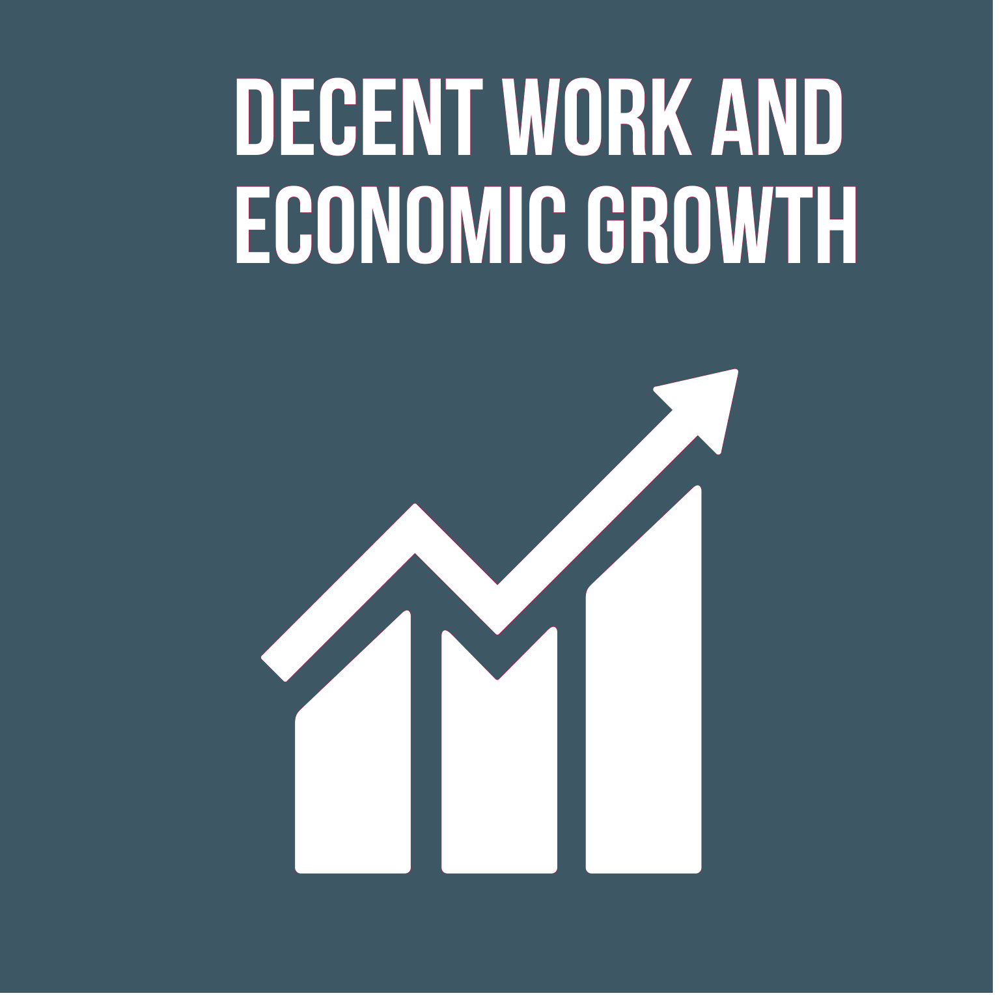
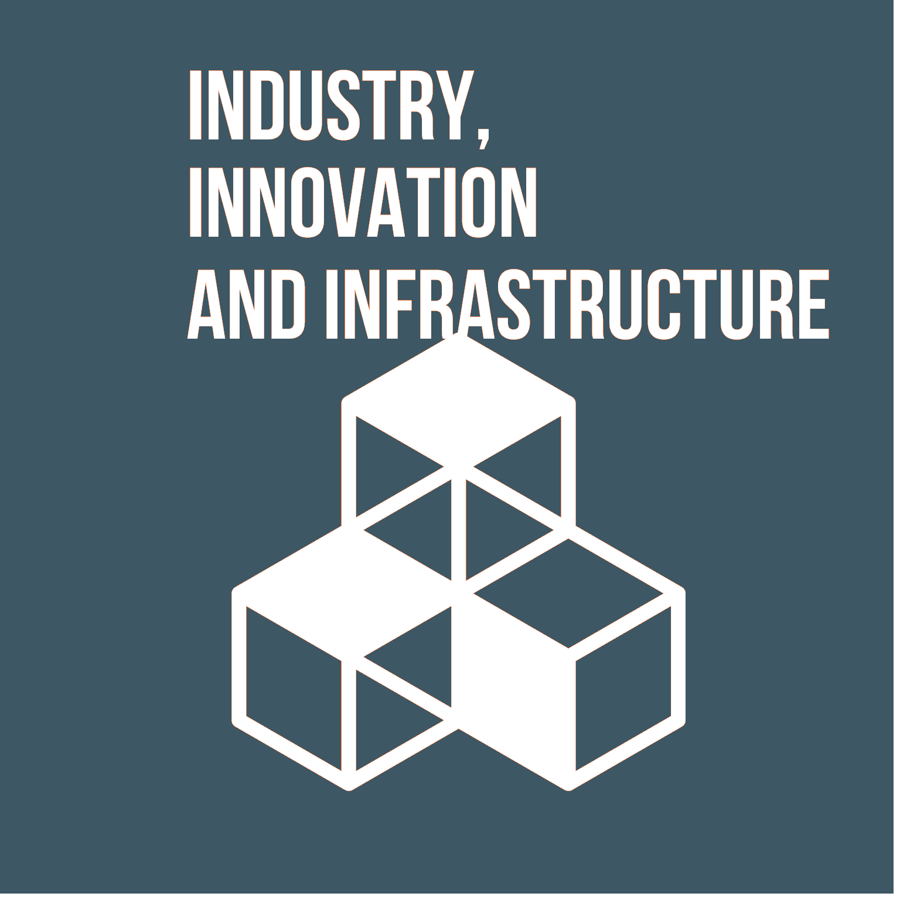
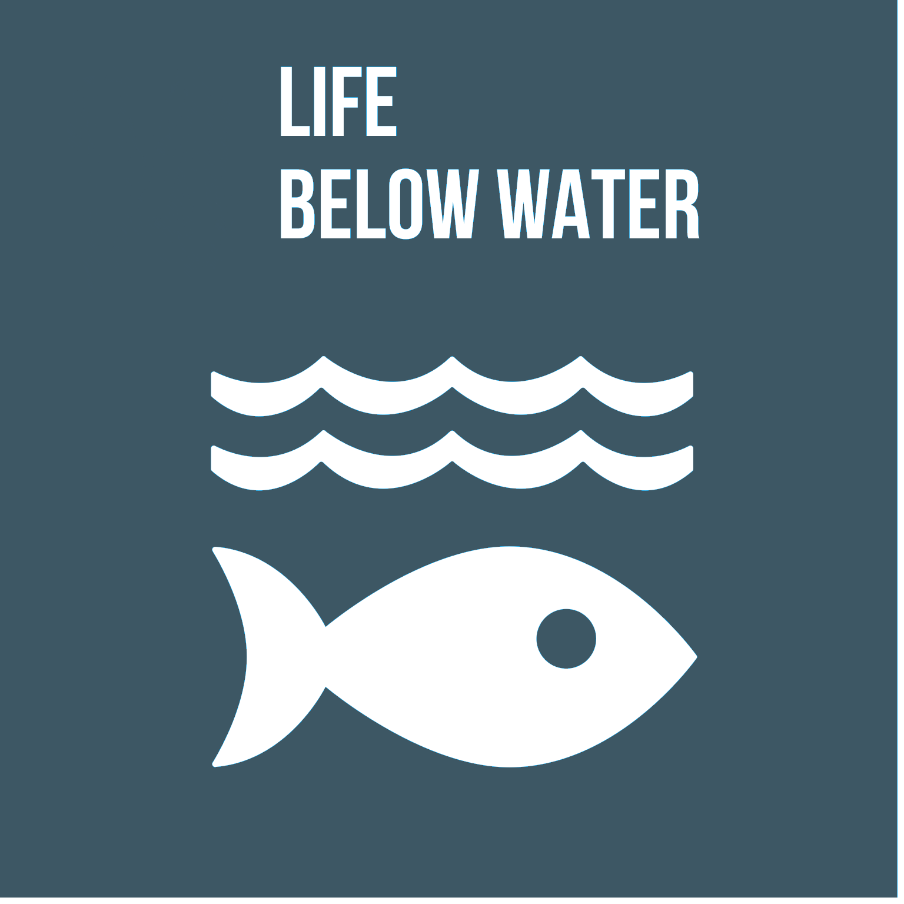

Alur kompetisi
-
Fase 1
14 Agu – 7 Sep
Pendaftaran & pitch deck
Dua gelombang pendaftaran. Tim mengirim pitch deck sebagai seleksi tahap I.
-
Fase 2
17 – 25 Sep
Bootcamp & challenge
20 tim mengikuti bootcamp daring, lalu memperbaiki pitch deck dan membuat video pitching.
-
Fase 3
1 – 9 Okt
Final day & awarding
5 finalis presentasi secara luring. Juara diumumkan di hari yang sama.
Bidang kategori
Startup harus sesuai dengan tema dan salah satu dari 10 bidang berikut.
-

Zero Hunger
Startup yang bergerak dalam mencapai tujuan Indonesia menuntaskan permasalahan kelaparan, seperti inovasi pangan dengan penciptaan inovasi untuk perbaikan nutrisi.
-

Good Health and Well-Being
Isu kesehatan merupakan hal yang menjadi perhatian utama sehingga dibutuhkan inovasi untuk membuat startup agar kesejahteraan masyarakat mampu meningkat.
-

Quality Education
Teknologi dalam menunjang pendidikan sangat dibutuhkan karena modernisasi pendidikan harus selalu dilakukan inovasi.
-

Clean Water and Sanitation
Startup yang bergerak untuk merevitalisasi air dan sanitasi layak dengan inovasi teknologi yang bisa membantu masyarakat.
-

Affordable and Clean Energy
Listrik dan energi terbarukan merupakan hal yang harus dikembangkan demi terciptanya aksesibilitas yang mudah bagi penduduk dan aspek lainnya.
-

Decent Work and Economic Growth
Startup yang bergerak dalam bidang investasi serta pertumbuhan ekonomi untuk memaksimalkan kapabilitas perekonomian suatu negara.
-

Industry, Innovation, and Infrastructure
Industri yang berkelanjutan ditunjang oleh sistem infrastruktur yang perlu diinovasikan sehingga startup ini bergerak pada bidang infrastruktur modern.
-

Sustainable Cities and Communities
Startup yang difungsikan untuk membuat kota menjadi inklusif, aman, kuat, dan berkelanjutan.
-

Responsible Consumption and Production
Startup yang bergerak dalam memastikan pola konsumsi dan produksi berkelanjutan.
-

Life Below Water
Startup yang bergerak dalam perburuan dan pencemaran terhadap ekosistem laut, maka dalam pembangunan berkelanjutan kehidupan laut akan dilindungi.
Timeline & ketentuan
Hasil setiap pengumuman disampaikan melalui narahubung dan Instagram @rnb_competition. Format pitch deck dan skema penilaian ada di guidebook.
Fase 1Pendaftaran & pitch deck
-
14 Agustus – 7 September 2022
Tahap 1: Pendaftaran dan pengiriman pitch deck (seleksi tahap I)
Pendaftaran dilakukan secara daring melalui Google Formulir, lalu tim mengirimkan pitch deck sebagai seleksi tahap I. Gelombang 1: 14–27 Agustus 2022. Gelombang 2: 28 Agustus – 7 September 2022.
Kriteria peserta
- Satu tim terdiri dari 3 sampai 5 orang berstatus mahasiswa aktif (diploma dan/atau sarjana) yang dibuktikan melalui Kartu Tanda Mahasiswa (KTM).
- Peserta dalam 1 tim boleh berasal dari perguruan tinggi yang berbeda.
- Setiap tim hanya boleh mengirimkan 1 pitch deck.
- Anggota dan ketua tim yang tertera pada formulir pendaftaran tidak dapat digantikan oleh orang lain dengan alasan apa pun.
- Pitch deck yang dilombakan adalah karya orisinal dan bukan bentuk plagiarisme.
- Startup yang dilombakan dapat berupa:
- Startup yang baru merintis atau sudah berjalan maksimal pada tahap seed funding (pre-seed dan seed funding / pre-MVP).
- Persyaratan tersebut dibuktikan melalui tautan media sosial, website, aplikasi mobile, atau prototipe startup.
- Startup yang dilombakan sesuai dengan tema dan salah satu subtema yang ditentukan panitia.
- Peserta wajib mengikuti seluruh rangkaian kegiatan serta ketentuan dan peraturan R’nB Startup Competition 2022 apabila lolos pada setiap tahap seleksi.
- Bila terdapat pelanggaran pada poin-poin di atas, panitia dan juri berhak memberikan sanksi tegas kepada peserta.
- Keputusan juri bersifat mutlak dan tidak dapat diganggu gugat.
Mekanisme pendaftaran & pembayaran
- Klik Daftar sekarang di website ini. Anda akan diarahkan ke Google Formulir.
- Isi semua pertanyaan dengan data yang lengkap, benar, dan dapat dipertanggungjawabkan.
- Kumpulkan berkas pendaftaran:
- Pitch deck (.pdf), kreatif dan inovatif sesuai ketentuan.
- Scan KTM (.pdf) ketua dan semua anggota tim, disatukan dalam 1 file.
- Twibbon dan follow Instagram: setiap anggota mengikuti Instagram dan memposting twibbon di akun pribadi, lalu bukti follow dan postingan seluruh anggota dijadikan 1 file pdf. Template twibbon dan caption: bit.ly/twibbonrnbc2022.
- Bukti pembayaran.
Biaya pendaftaran
- Gelombang 1
- Rp 50.000 (14–27 Agustus 2022)
- Gelombang 2
- Rp 75.000 (28 Agustus – 7 September 2022)
Rekening pembayaran
- BRI
- 5312-01-017539-53-5 a.n. Tri Puji Astuti
- GoPay & OVO
- 0812 2947 0673 a.n. Farah Alifia Putri
Konfirmasi
Setelah mendaftar dan membayar, kirim screenshot Google Formulir dan bukti pembayaran dengan format Nama Start-up_Nama Ketua_KonfirmasiPendaftaranRNBC2022 ke salah satu narahubung:
- Fadia: +62 813 2985 1807
- Mira: +62 851 5629 5914
Fase 2Bootcamp & challenge
-
15 Agustus 2022
Tahap 2: Pengumuman peserta bootcamp
-
17–18 September 2022
Tahap 3: Bootcamp
- Peserta bootcamp adalah 20 tim yang lolos seleksi pitch deck. Tim yang lolos melakukan konfirmasi dengan format Nama Startup_Nama Ketua Tim_Asal Peserta ke Contact Person (Humas).
- Tim yang lolos wajib mengikuti seluruh rangkaian bootcamp pada 17–18 September 2022. Platform yang digunakan meliputi Zoom, grup WhatsApp, dan Google Classroom.
- Peserta wajib mematuhi tata tertib selama bootcamp berlangsung.
- Peserta dibagi menjadi beberapa kelas, dan setiap kelas mendapatkan 1 mentor.
- Bootcamp diselenggarakan secara daring melalui video conference.
- Bootcamp berisi penyampaian materi wajib dan sesi mentoring. Materi: membuat pitch deck (penajaman market size), market validation (riset, solusi, dan strategi market), proyeksi finansial, serta fundraising dan pitching.
-
19–25 September 2022
Tahap 4: Challenge
- Setelah bootcamp, tahap Challenge berupa pengumpulan ulang pitch deck yang sudah diperbaiki sesuai arahan mentor dan pembuatan video pitching.
- Batas akhir pengumpulan perbaikan pitch deck dan video pitching: 25 September 2022 pukul 23.59 WIB, melalui Google Form/Google Classroom.
- Tim yang terlambat mengumpulkan Challenge dinyatakan gugur.
Ketentuan video pitching
- Durasi maksimal 5 menit, format landscape, resolusi minimal HD (1280 × 720), ukuran file maksimal 1000 MB.
- Berisi penjelasan pitch deck yang jelas, runtut, kreatif, dan menarik, dengan bagian pemaparan langsung oleh peserta.
- Pencahayaan ruangan terang tanpa backlight. Bahasa Indonesia atau Inggris.
- Urutan: template #1 (2–3 detik), logo dan nama startup pada template #2, penjelasan 10 komponen pitch deck, lalu template #1 (2–3 detik). Template tersedia di guidebook.
-
24 September 2022
Tahap 5: Pengumuman lolos tahap 2
Fase 3Final day & awarding
-
1 Oktober 2022
Tahap 6: Pengumuman final day
-
2 Oktober 2022
Tahap 7: Technical meeting final day
-
9 Oktober 2022
Tahap 8: Final day
- Finalis adalah 5 tim terbaik berdasarkan akumulasi penilaian bootcamp dan seleksi pitch deck. Tim yang lolos melakukan konfirmasi dengan format Nama Startup_Nama Ketua Tim_Asal Peserta ke Contact Person (Humas) dan bergabung di grup WhatsApp final day.
- Final dilaksanakan secara luring pada 9 Oktober 2022. Waktu dan tempat diumumkan saat technical meeting.
- Setiap tim presentasi selama 30 menit: 10 menit presentasi dan 20 menit tanya jawab.
- Sambil menunggu giliran, tim menjaga booth pameran masing-masing yang disediakan panitia.
-
9 Oktober 2022
Tahap 9: Awarding
Juara 1, 2, dan 3 mendapatkan uang pembinaan, sertifikat, dan trofi. Juara ditentukan dari akumulasi nilai presentasi final day.
Tentang acara
R’nB Startup Hackathon merupakan acara tahunan tingkat nasional yang diselenggarakan oleh Unit Kegiatan Mahasiswa Research and Business (UKM R’nB) Universitas Diponegoro. Kegiatan ini memberi kesempatan kepada mahasiswa dari seluruh universitas di Indonesia untuk menyampaikan ide atau gagasan yang mengasah kreativitas serta keterampilan bisnis dalam bentuk startup digital.
Rangkaian R’nB Startup Hackathon 2022 terdiri atas tiga tahap seleksi dan masa bootcamp sebagai wadah bagi peserta untuk mengembangkan pengetahuan dan keahlian dalam bisnis startup digital. Dengan konsep baru sebagai kompetisi startup mahasiswa, acara ini diharapkan membantu mahasiswa mengembangkan startup yang sedang dirintis sekaligus menambah wawasan seputar startup.
Tema: “Realizing the Post-Pandemic Economic Growth of Indonesia”
Pandemi covid-19 dilaporkan telah memberikan dampak pada perekonomian dunia, juga Indonesia. Pembatasan mobilitas penduduk selama penanganan covid-19 membuat ruang gerak ekonomi tidak optimal. Karena itu diperlukan strategi pertumbuhan untuk meningkatkan pemulihan ekonomi Indonesia setelah pandemi. R’nB Startup Competition 2022 diadakan untuk memantik ide kreatif generasi muda, terutama mahasiswa, dalam upaya pemulihan ekonomi berkelanjutan untuk mewujudkan Indonesia yang tangguh.
Pertanyaan umum
Dirangkum dari guidebook resmi.
Siapa yang boleh mengikuti kompetisi ini?
Mahasiswa aktif jenjang diploma dan/atau sarjana dari perguruan tinggi mana pun di Indonesia, dibuktikan dengan KTM. Satu tim terdiri dari 3 sampai 5 orang, dan anggota tim boleh berasal dari perguruan tinggi yang berbeda.
Berapa biaya pendaftarannya?
Gelombang 1 (14–27 Agustus 2022) Rp 50.000 dan gelombang 2 (28 Agustus – 7 September 2022) Rp 75.000 per tim. Rekening pembayaran tercantum pada tahap 1.
Startup seperti apa yang boleh diikutkan?
Startup yang baru merintis atau sudah berjalan maksimal pada tahap seed funding (pre-seed, seed funding, atau pre-MVP), dibuktikan dengan tautan media sosial, website, aplikasi, atau prototipe. Startup harus sesuai dengan tema dan salah satu dari 10 bidang kategori.
Berkas apa saja yang dikumpulkan saat mendaftar?
Pitch deck (.pdf), scan KTM seluruh anggota dalam 1 file pdf, bukti follow Instagram dan posting twibbon seluruh anggota dalam 1 file pdf, serta bukti pembayaran. Setelah itu lakukan konfirmasi ke narahubung.
Apa ketentuan pitch deck?
Maksimal 15 slide dalam format pdf, mencakup 10 komponen (problem statement, solution, product/technology concept, business model, market size, go-to-market strategy, competition, finance projection, product status & roadmap, dan team), serta mencantumkan logo R’nB dan R’nB Startup Competition di kiri atas minimal pada satu slide.
Bagaimana alur seleksinya?
Seleksi pitch deck, lalu 20 tim terbaik mengikuti bootcamp dan challenge (perbaikan pitch deck dan video pitching). Lima tim terbaik maju ke final day luring untuk presentasi 10 menit dan tanya jawab 20 menit.
Apa ketentuan video pitching?
Durasi maksimal 5 menit, format landscape, resolusi minimal 1280 × 720, ukuran file maksimal 1000 MB, berbahasa Indonesia atau Inggris, dan memuat pemaparan langsung oleh peserta. Urutan template ada di guidebook.
Apa hadiah untuk pemenang?
Juara 1, 2, dan 3 mendapatkan uang pembinaan, sertifikat, dan trofi. Juara ditentukan dari akumulasi nilai presentasi final day.
Ke mana saya bisa bertanya?
Hubungi narahubung panitia melalui WhatsApp di bagian Narahubung, atau kirim pesan ke Instagram @rnb_competition.
Guidebook & narahubung
Template twibbon dan caption: bit.ly/twibbonrnbc2022